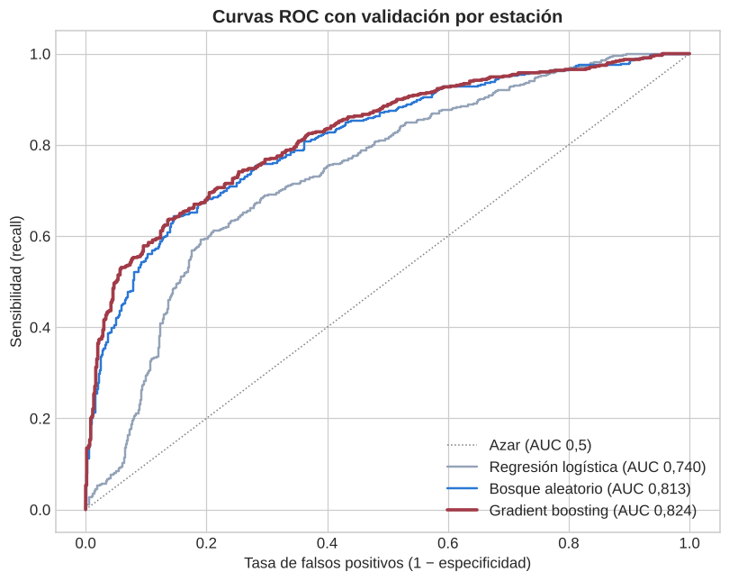
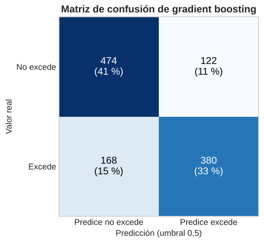
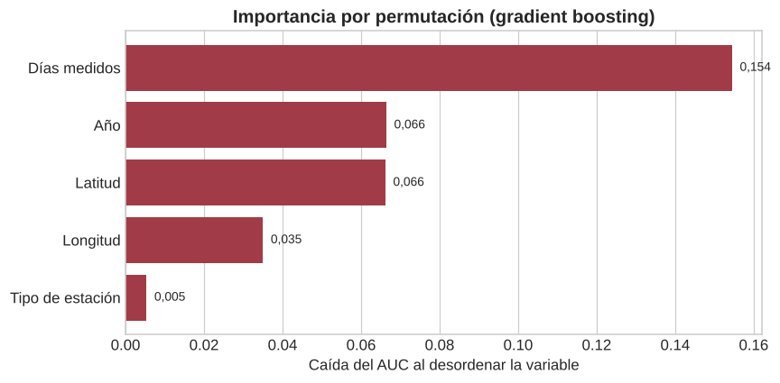
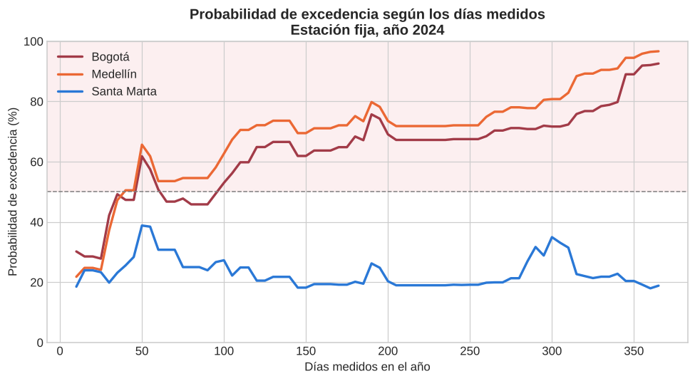

Modelo de predicción#
En este capítulo se entrena el modelo que predice si una estación tendrá en el año al menos un día con PM2.5 por encima del límite diario de la Resolución 2254 de 2017. Se usan los registros de 24 horas y los predictores que salieron del análisis exploratorio. El mismo modelo está integrado en el dashboard en Dash y en la aplicación en Shiny.
2.1 Preparación de los datos#
import unicodedata
import numpy as np, pandas as pd, matplotlib.pyplot as plt
from sklearn.linear_model import LogisticRegression
from sklearn.ensemble import RandomForestClassifier, GradientBoostingClassifier
from sklearn.pipeline import make_pipeline
from sklearn.preprocessing import StandardScaler
from sklearn.model_selection import GroupKFold, GroupShuffleSplit
from sklearn.metrics import (roc_auc_score, roc_curve, accuracy_score, precision_score, recall_score, f1_score,
cohen_kappa_score, confusion_matrix)
from sklearn.inspection import permutation_importance
plt.style.use("seaborn-v0_8-whitegrid")
plt.rcParams.update({"figure.dpi": 110, "axes.titleweight": "bold", "font.size": 11})
def tabla(d, columnas=None, decimales=3):
d = d.copy()
if columnas is not None:
d.columns = columnas
num = lambda x: "—" if pd.isna(x) else (str(x) if isinstance(x, (int, np.integer)) else
f"{x:,.{decimales}f}".replace(",", "X").replace(".", ",").replace("X", "."))
return d.style.format({c: num for c in d.select_dtypes("number").columns}).hide(axis="index").set_table_styles([
{"selector": "", "props": [("border-collapse", "collapse"), ("font-size", "0.88em")]},
{"selector": "thead th", "props": [("background", "#1c2b33"), ("color", "white"), ("font-weight", "500"),
("padding", "7px 12px"), ("text-align", "left")]},
{"selector": "tbody td", "props": [("padding", "6px 12px"), ("border-bottom", "1px solid #d5dee2")]},
{"selector": "tbody tr:nth-child(even) td", "props": [("background", "#f3f7f8")]}])
def normalizar(t):
t = unicodedata.normalize("NFKD", str(t)).encode("ascii", "ignore").decode()
return " ".join(t.upper().split())
df = pd.read_csv("dataset_calidad_aire.csv")
df["Año"] = df["Año"].astype(str).str.replace(",", "").astype(int)
for col in ["ID Estacion", "Suma", "No. de datos", "Promedio", "Mediana", "Percentil 98", "Máximo", "Mínimo"]:
df[col] = pd.to_numeric(df[col].astype(str).str.replace(",", "").str.strip(), errors="coerce")
df = df.drop_duplicates().reset_index(drop=True)
df["Municipio_norm"] = df["Nombre del Municipio"].map(normalizar)
d = df[(df["Variable"] == "PM2.5") & (df["Tiempo de exposición (horas)"] == 24)
& (df["Tipo de Estación"].isin(["Fija", "Indicativa"]))].copy()
d["Excede"] = (d["Excedencias limite actual"] > 0).astype(int)
d["Fija"] = (d["Tipo de Estación"] == "Fija").astype(int)
d = d.reset_index(drop=True)
PREDICTORES = ["Latitud", "Longitud", "Fija", "No. de datos", "Año"]
X, y, grupos = d[PREDICTORES], d["Excede"], d["Estación"]
tabla(pd.DataFrame({"Registros": [len(d)], "Estaciones": [d["Estación"].nunique()],
"Exceden": [int(y.sum())], "Porcentaje que excede (%)": [y.mean() * 100]}), decimales=1)
| Registros | Estaciones | Exceden | Porcentaje que excede (%) |
|---|---|---|---|
| 1144 | 383 | 548 | 47,9 |
Interpretación
El conjunto de entrenamiento tiene 1.144 registros de 383 estaciones y el 47,9 % excede el límite. Las dos clases tienen casi el mismo tamaño, así que no hace falta balancearlas.
Predictores#
Predictor |
Descripción |
Por qué entra |
|---|---|---|
Latitud y longitud |
Ubicación de la estación |
Las ciudades andinas exceden mucho más que el Caribe |
Fija |
1 si la estación es fija, 0 si es indicativa |
Fijas 52 % frente a indicativas 20 % |
No. de datos |
Días medidos en el año |
Entre más días se mide, más fácil es captar un día malo |
Año |
2011 a 2024 |
Recoge el cambio de límite de 2018 y los cambios de la red |
No entran el promedio, la mediana, el percentil 98, el máximo ni los días de excedencia del PM2.5, porque se calculan con las mismas mediciones que definen la variable objetivo (fuga de información).
2.2 Validación por estación#
Una misma estación aparece en varios años. Si las filas se dividen al azar, la misma estación queda en entrenamiento y en prueba, y el modelo parece mejor de lo que es. Por eso se usa GroupKFold con 5 grupos: cada estación queda completa en un solo grupo. Se comparan tres modelos: regresión logística, bosque aleatorio y gradient boosting.
MODELOS = {
"Regresión logística": make_pipeline(StandardScaler(), LogisticRegression(max_iter=2000)),
"Bosque aleatorio": RandomForestClassifier(n_estimators=400, min_samples_leaf=5, random_state=42, n_jobs=-1),
"Gradient boosting": GradientBoostingClassifier(n_estimators=200, max_depth=3, learning_rate=0.05,
subsample=0.8, random_state=42),
}
cv = GroupKFold(n_splits=5)
probabilidades, filas = {}, []
for nombre, modelo in MODELOS.items():
prob = np.zeros(len(y)); auc_pl = []
for tr, te in cv.split(X, y, grupos):
modelo.fit(X.iloc[tr], y.iloc[tr])
prob[te] = modelo.predict_proba(X.iloc[te])[:, 1]
auc_pl.append(roc_auc_score(y.iloc[te], prob[te]))
pred = (prob >= 0.5).astype(int)
probabilidades[nombre] = prob
filas.append({"Modelo": nombre, "AUC": roc_auc_score(y, prob), "AUC media por grupo": np.mean(auc_pl),
"Desv. por grupo": np.std(auc_pl), "Exactitud": accuracy_score(y, pred),
"Precisión": precision_score(y, pred), "Recall": recall_score(y, pred), "F1": f1_score(y, pred)})
comparacion = pd.DataFrame(filas).sort_values("AUC", ascending=False)
tabla(comparacion)
| Modelo | AUC | AUC media por grupo | Desv. por grupo | Exactitud | Precisión | Recall | F1 |
|---|---|---|---|---|---|---|---|
| Gradient boosting | 0,824 | 0,825 | 0,039 | 0,747 | 0,757 | 0,693 | 0,724 |
| Bosque aleatorio | 0,813 | 0,814 | 0,042 | 0,736 | 0,743 | 0,686 | 0,713 |
| Regresión logística | 0,740 | 0,743 | 0,053 | 0,688 | 0,666 | 0,701 | 0,683 |
Interpretación
Gradient boosting tiene el mejor AUC (0,824), seguido muy de cerca por el bosque aleatorio (0,813). La regresión logística queda bastante atrás (0,740) porque solo puede trazar fronteras lineales, y la relación con la ubicación no es lineal: el riesgo sube en el centro andino y baja hacia el norte y el sur.
Con gradient boosting el modelo acierta en 3 de cada 4 registros (exactitud de 0,747) y detecta el 69 % de los que sí exceden (recall de 0,693). La desviación entre grupos es baja (0,039), así que el resultado no depende de qué estaciones quedaron en cada grupo.
fig, ax = plt.subplots(figsize=(7.5, 6))
colores = {"Regresión logística": "#94a3b8", "Bosque aleatorio": "#2a78d6", "Gradient boosting": "#a23b48"}
ax.plot([0, 1], [0, 1], ls=":", color="gray", lw=1, label="Azar (AUC 0,5)")
for nombre, prob in probabilidades.items():
fpr, tpr, _ = roc_curve(y, prob)
ax.plot(fpr, tpr, color=colores[nombre], lw=2.4 if nombre == "Gradient boosting" else 1.6,
label=f"{nombre} (AUC {roc_auc_score(y, prob):.3f})".replace(".", ","))
ax.set_title("Curvas ROC con validación por estación")
ax.set_xlabel("Tasa de falsos positivos (1 − especificidad)"); ax.set_ylabel("Sensibilidad (recall)")
ax.legend(loc="lower right"); plt.tight_layout(); plt.show()

Interpretación
Las curvas del bosque aleatorio y de gradient boosting casi se superponen y están siempre por encima de la regresión logística. Las tres quedan lejos de la diagonal, que sería un modelo que adivina al azar.
prob = probabilidades["Gradient boosting"]
vn, fp, fn, vp = confusion_matrix(y, (prob >= 0.5).astype(int)).ravel()
matriz = np.array([[vn, fp], [fn, vp]])
fig, ax = plt.subplots(figsize=(5.5, 4.6))
ax.imshow(matriz, cmap="Blues")
for i in range(2):
for j in range(2):
v = matriz[i, j]
ax.text(j, i, f"{v}\n({v / matriz.sum() * 100:.0f} %)", ha="center", va="center", fontsize=13,
color="white" if v > matriz.max() / 2 else "black")
ax.set_xticks([0, 1], ["Predice no excede", "Predice excede"]); ax.set_yticks([0, 1], ["No excede", "Excede"])
ax.set_xlabel("Predicción (umbral 0,5)"); ax.set_ylabel("Valor real")
ax.set_title("Matriz de confusión de gradient boosting"); ax.grid(False); plt.tight_layout(); plt.show()

Interpretación
De los 1.144 registros, el modelo clasifica bien 854: 474 que no exceden y 380 que sí. Se equivoca en 122 falsas alarmas (predice excedencia y no la hubo) y en 168 excedencias que no detecta. Los errores están repartidos, así que el modelo no está sesgado hacia una sola clase.
2.3 Importancia de los predictores#
modelo_gb = MODELOS["Gradient boosting"]
importancias = []
for tr, te in cv.split(X, y, grupos):
modelo_gb.fit(X.iloc[tr], y.iloc[tr])
r = permutation_importance(modelo_gb, X.iloc[te], y.iloc[te], scoring="roc_auc", n_repeats=10, random_state=42)
importancias.append(r.importances_mean)
imp = pd.Series(np.mean(importancias, axis=0),
index=["Latitud", "Longitud", "Tipo de estación", "Días medidos", "Año"]).sort_values()
fig, ax = plt.subplots(figsize=(8, 4))
ax.barh(imp.index, imp.values, color="#a23b48")
for yv, v in zip(imp.index, imp.values):
ax.text(v + 0.002, yv, f"{v:.3f}".replace(".", ","), va="center", fontsize=9)
ax.set_xlabel("Caída del AUC al desordenar la variable"); ax.set_title("Importancia por permutación (gradient boosting)")
ax.grid(axis="y", visible=False); plt.tight_layout(); plt.show()

Interpretación
Los días medidos son el predictor que más pesa: si se desordenan, el AUC baja 0,154. Después vienen el año (0,066) y la ubicación (latitud 0,066 y longitud 0,035). El tipo de estación casi no aporta (0,005) porque su efecto ya está recogido en los días medidos, ya que las estaciones fijas son las que miden todo el año.
2.4 Entrenamiento con división en entrenamiento y prueba#
Esta es la forma en que se entrena el modelo en el dashboard y en la aplicación: se elige un porcentaje de estaciones para entrenar (aquí 80 %) y el resto se usa para probar. La división también se hace por estación.
division = GroupShuffleSplit(n_splits=1, train_size=0.8, random_state=42)
i_tr, i_te = next(division.split(X, y, grupos))
modelo_final = GradientBoostingClassifier(n_estimators=200, max_depth=3, learning_rate=0.05, subsample=0.8,
random_state=42).fit(X.iloc[i_tr], y.iloc[i_tr])
prob_te = modelo_final.predict_proba(X.iloc[i_te])[:, 1]
pred_te = (prob_te >= 0.5).astype(int)
yt = y.iloc[i_te]
vn, fp, fn, vp = confusion_matrix(yt, pred_te).ravel()
tabla(pd.DataFrame([{
"Estaciones de entrenamiento": grupos.iloc[i_tr].nunique(), "Estaciones de prueba": grupos.iloc[i_te].nunique(),
"AUC": roc_auc_score(yt, prob_te), "Exactitud": accuracy_score(yt, pred_te), "Kappa": cohen_kappa_score(yt, pred_te),
"Sensibilidad": recall_score(yt, pred_te), "Especificidad": vn / (vn + fp), "F1": f1_score(yt, pred_te)}]))
| Estaciones de entrenamiento | Estaciones de prueba | AUC | Exactitud | Kappa | Sensibilidad | Especificidad | F1 |
|---|---|---|---|---|---|---|---|
| 306 | 77 | 0,816 | 0,763 | 0,514 | 0,680 | 0,828 | 0,716 |
Interpretación
Con 306 estaciones para entrenar y 77 para probar, el AUC en prueba es 0,816, muy parecido al de la validación cruzada. El kappa de 0,51 indica un acuerdo moderado más allá del azar. La especificidad (0,83) es mayor que la sensibilidad (0,68): el modelo se equivoca menos con las estaciones que no exceden.
2.5 Serialización del modelo#
Para usar el modelo en el dashboard sin volver a entrenarlo cada vez, se entrena con todos los datos y se guarda con joblib. El dashboard carga ese archivo al iniciar.
import joblib
modelo_todos = GradientBoostingClassifier(n_estimators=200, max_depth=3, learning_rate=0.05, subsample=0.8,
random_state=42).fit(X, y)
joblib.dump(modelo_todos, "modelo_pm25.joblib")
modelo_cargado = joblib.load("modelo_pm25.joblib")
print("Modelo guardado y cargado:", type(modelo_cargado).__name__)
Modelo guardado y cargado: GradientBoostingClassifier
2.6 Ejemplos de predicción#
NOMBRE = {"BOGOTA, D.C.": "Bogotá", "MEDELLIN": "Medellín", "CALI": "Cali", "SANTA MARTA": "Santa Marta",
"MONTERIA": "Montería"}
def caso(municipio, fija, dias, anio):
m = d[d["Municipio_norm"] == municipio]
return {"Municipio": NOMBRE[municipio], "Tipo": "Fija" if fija else "Indicativa", "Días medidos": dias, "Año": anio,
"Latitud": m["Latitud"].mean(), "Longitud": m["Longitud"].mean(), "Fija": fija, "No. de datos": dias}
casos = pd.DataFrame([caso("BOGOTA, D.C.", 1, 330, 2024), caso("MEDELLIN", 1, 300, 2024),
caso("CALI", 1, 300, 2024), caso("SANTA MARTA", 1, 300, 2024),
caso("MONTERIA", 0, 60, 2024), caso("BOGOTA, D.C.", 0, 60, 2024)])
casos["Probabilidad (%)"] = modelo_cargado.predict_proba(casos[PREDICTORES])[:, 1] * 100
casos["Predicción"] = np.where(casos["Probabilidad (%)"] >= 50, "Excede", "No excede")
tabla(casos[["Municipio", "Tipo", "Días medidos", "Año", "Probabilidad (%)", "Predicción"]], decimales=0)
| Municipio | Tipo | Días medidos | Año | Probabilidad (%) | Predicción |
|---|---|---|---|---|---|
| Bogotá | Fija | 330 | 2024 | 78 | Excede |
| Medellín | Fija | 300 | 2024 | 81 | Excede |
| Cali | Fija | 300 | 2024 | 22 | No excede |
| Santa Marta | Fija | 300 | 2024 | 35 | No excede |
| Montería | Indicativa | 60 | 2024 | 8 | No excede |
| Bogotá | Indicativa | 60 | 2024 | 28 | No excede |
Interpretación
Con las mismas condiciones (estación fija, unos 300 días medidos, 2024), la probabilidad cambia mucho según el lugar: Bogotá (78 %) y Medellín (81 %) quedan por encima del 50 %, mientras que Cali (22 %) y Santa Marta (35 %) quedan por debajo. Una estación indicativa que mide solo 60 días tiene baja probabilidad aunque esté en Bogotá (28 %), porque tiene pocos días para registrar una excedencia.
dias = np.arange(10, 366, 5)
fig, ax = plt.subplots(figsize=(9, 5))
ax.axhspan(50, 100, color="#fbe9eb", alpha=0.7, zorder=0)
for municipio, color in [("BOGOTA, D.C.", "#a23b48"), ("MEDELLIN", "#eb6834"), ("SANTA MARTA", "#2a78d6")]:
c = caso(municipio, 1, 0, 2024)
Xc = pd.DataFrame({"Latitud": c["Latitud"], "Longitud": c["Longitud"], "Fija": 1, "No. de datos": dias, "Año": 2024})
ax.plot(dias, modelo_cargado.predict_proba(Xc[PREDICTORES])[:, 1] * 100, lw=2.2, color=color, label=c["Municipio"])
ax.axhline(50, ls="--", color="gray", lw=1)
ax.set_ylim(0, 100); ax.set_xlabel("Días medidos en el año"); ax.set_ylabel("Probabilidad de excedencia (%)")
ax.set_title("Probabilidad de excedencia según los días medidos\nEstación fija, año 2024")
ax.legend(); plt.tight_layout(); plt.show()

Interpretación
En Bogotá y Medellín la probabilidad sube con los días medidos y pasa el 50 % desde unos 100 días. En Santa Marta se queda entre 20 % y 40 % aunque se mida casi todo el año, porque allí la ubicación pesa más que la cobertura. Es el mismo patrón del análisis exploratorio: la excedencia depende tanto del lugar como de cuántos días se midió. Las curvas tienen escalones porque gradient boosting combina muchos árboles de decisión.
Precaución
El modelo no pronostica concentraciones ni días concretos. Estima la probabilidad de que una estación tenga al menos un día sobre el límite en el año, según su ubicación, su tipo, su cobertura y el año. Para años después de 2024 la respuesta equivale a suponer condiciones parecidas a las de 2024.
2.7 Integración en el dashboard y la aplicación#
El modelo está integrado en las dos herramientas interactivas, con dos páginas:
Entrenamiento del modelo: se elige el algoritmo y el porcentaje de estaciones para entrenar, y se muestran las métricas en prueba, la matriz de confusión y la curva ROC.
Predicción: se eligen el municipio, el tipo de estación, los días medidos y el año, o se carga un ejemplo de riesgo alto o bajo, y se obtiene la probabilidad de excedencia con un mapa satelital del riesgo por municipio.
Herramienta |
Modelos |
Enlace |
|---|---|---|
Dash (Python) |
Regresión logística, bosque aleatorio y gradient boosting |
|
Shiny (R) |
Regresión logística, bosque aleatorio y GAM |